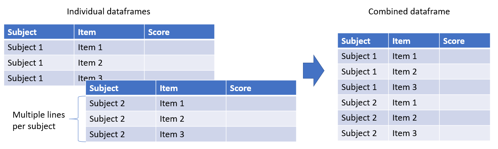
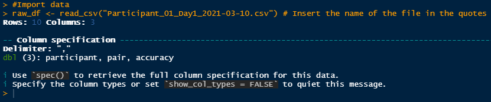
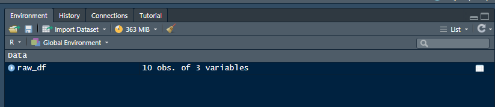
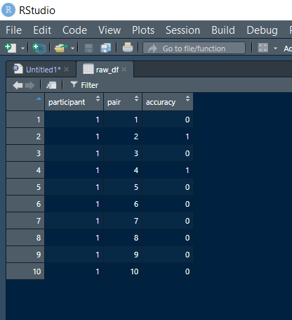

Importing data
Objectives
- Learn the difference between long and wide formats
- Learn how to import a data file
- Learn how to import a series of data files
So you've finished setting up your script and you ready to start analyzing. Thing is, you need to import your data before you can do anything with it. This tutorial will cover two of the most common file importation scenarios: 1- importing one mutlisubject data file with one subject per line (i.e., Qualtrics data), 2- importing multiple single subject data files. Although most examples will be with csv files, resources for handling other types of files (e.g., excel, e-prime) will be provided at the bottom.
Long vs wide data structures
Before we start importing data, let's first take a look at two types of data structures you may encounter: wide format and long format.
Wide format: Data is in a wide format when each participant is a row, and each observation(i.e., question or trial) is column. You will most likely encounter this format when using survey tools like Qualtrics or Google forms. In general, importing the type of data requires a single step because participants are already all in one data sheet.
Long format: Data is in a long format when observations for each participant are distributed over multiple rows. You will most likely encounter this format when collecting behavioural data with mulitple trials per participants using software like MATLAB, E-prime, and Psychopy. In general, importing (as well as cleaning) this type of data requires a few extra steps because participants' individual data must be imported and then combining into one dataframe.
Importing your first data file
Let's start with the easiest/most common scenario. You've just run a study on Qualtrics, and you wish to import the data into R. All you need, really, is the function read_csv() to import any csv file. Let's add this line to the script we set up in the previous tutorial.
# Preprocessing and analysis for implicit memory project
# Install and load packages
# install.packages("tidyverse")
library(tidyverse) # Insert package name in parentheses or quotes
# Set working directory
setwd("D:/Memory_data") # Insert file path in the quotes
#Import data
raw_df <- read_csv("Participant_01_Day1_2021-03-10.csv") # Insert the name of the file in the quotes
Let's examine this last line more closely. Notice that there are three parts: raw_df + <- + read_csv("data.csv").
raw_dfis the object you will be saving the data to<-is equavalent to an "=" sign and means the result of the operation will be stored in that variable. UseAlt +to quickly insert the<-symbol.read_csv("data.csv")is the operation you are asking are to do (i.e., extract data from the csv file)
When running this line, notice that two things will happen. First, we have an output in the console.
Second, the new object name (raw_df) appeared in our global environment.
You can click on the name of the object (raw_df) to visualize the dataframe in a way that is similar to excel using rows and columns.
Common errors
At this stage, there are two common errors new R users run into. The first is [Error in read_csv("Participant_01_Day1_2021-03-10.csv") : could not find function "read_csv"]. This can happen when you haven't loaded the tidyverse package. As a general note, the "could not find function [inser function here]" error occurs frequently and often for the same reason everytime: you are calling a function from a package that has not been loaded.
In the event that you have loaded the package currently and the read_csv function still doesn't work, you can try read.csv(). Although read_csv() is better in general, read.csv() is a good back up if all else fails.
The second common error is [Error: 'Participant_01_Day1_2021-03-10.csv' does not exist in current working directory]. In this error message, R is telling you that it can't find the file your asking it to import. Often, the reason it can't find the file is because it is either looking for the wrong file (i.e., there is a typo in the file name) or in the wrong place (i.e., the working directory hasn't been set up properly).
To correct this, first make sure that the file name is correctly typed. This means the filename matches exactly the file name in the folder (letter case also matches) and that you include the correct extension (e.g., .csv).
If the file name is correct, then perhaps the probelm is with the working directory. Type getwd() in the console to find out where R is currently looking for your file. Then, use setwd() to set the new path. This path should lead to the folder where the file you are trying to import is. Finally, you can verify what the new working directory is using getwd() and try to import your file again if the new path matches the path to your file.
Congratulations! You have succesfully imported your first dataset.
Importing a series of data files
In some cases, importing a single data file is all you need (e.g., you are analyzing a qualtrics questionnaire in which each participant is a row and each quesiton is a column). However, you might want to import multiple similar files at once. This is especially relevant for when you are doing "experimental" studies (as opposed to survey studies) in which each participant has their own file and each file has multiple rows (each representing a trial). In this case, we can automatize the importation of files using lists and for loops.
First, you want to make sure that all the files you want to import are in one folder and this folder only contains the files you want to import (e.g., no subfolders, figures or summarized data.
# Importing multiple files
# Set working directory
setwd("D:/Memory_data") # Folder containing all the data
part_list <- list.files() # Create a list of all the items(e.g., files) in the folder
df <- NULL # Create an empty dataframe in which we will store data from all the participants
for(part_file in part_list){
part_df <- read_csv(part_file) # Imports the participant file
df <- rbind(df,part_df) # Combines participant to the dataframe df
}